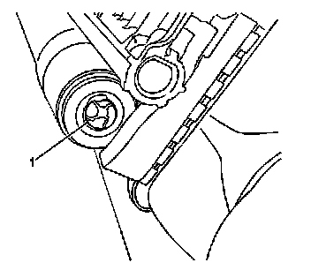
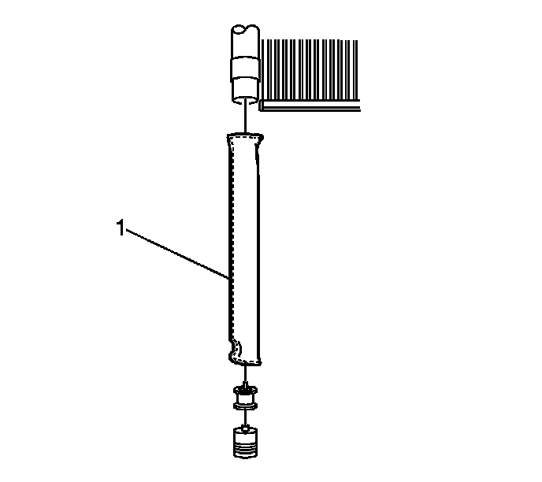

Receiver Dryer: Service and Repair
Air Conditioning Refrigerant Desiccant Replacement
Tools Required
J 39400-A Halogen Leak Detector
Removal Procedure
1. Recover the refrigerant. Refer to Refrigerant Recovery and Recharging (Refrigerant Recovery and Recharging) .

2. Raise and support the vehicle. Refer to Lifting and Jacking the Vehicle (Service and Repair) .
3. Remove the front air deflector retainers.
4. Remove the front air deflector.

5. Remove the desiccant bag plug (1).
Important: Record the amount of any lost PAG oil from the desiccant bag to maintain the correct total system amount.

6. Remove the desiccant bag (1).
Installation Procedure
1. Install the desiccant bag (1).
2. Lubricate the O-ring on the desiccant bag plug. Refer to O-Ring Replacement (Service and Repair) .
Notice: Refer to Fastener Notice (Fastener Notice) .
3. Install the desiccant bag plug (1).
Tighten the plug to 2.9 N.m (26 lb in).
4. Install the front air deflector.
5. Install the front air deflector retainers.
6. Lower the vehicle.
7. Add the proper amount of oil. Refer to Refrigerant System Capacities ([1][2]Capacity Specifications) .
8. Evacuate and recharge the refrigerant. Refer to Refrigerant Recovery and Recharging (Refrigerant Recovery and Recharging) .
9. Leak test the fittings of the component with J 39400-A .